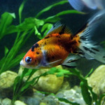

Shubunkin Goldfish

Appearance and Characteristics
According to The Spruce Pets, the Shubunkin goldfish is similar to the Comet goldfish. It has a long body, longer fins, and a calico coloration with black, red, white, and blue pigments. Shubunkins can live in outdoor ponds or aquariums of at least 50 gallons. Their unique coloring can also be paired with fancy-type goldfish to create an interesting display.
Origin and History
The Shubunkin was developed in Japan through selective cross-breeding of standard goldfish, long-fin Comet goldfish, and calico telescope goldfish. It was created through human selection and does not occur naturally in the wild.
Tankmates and Compatibility
Shubunkins are active, non-aggressive fish suitable for aquariums or outdoor ponds. Compatible tankmates include other long-bodied goldfish, such as Comets and Sarasas, as well as zebrafish and minnows. They may accidentally eat very small fish or invertebrates.
Breeding and Gender Differences
It can be difficult to distinguish males from females outside of spawning season. Females carrying eggs often develop rounder bellies. In suitable breeding setups, females can scatter up to 1,000 eggs over plants or roots. The eggs hatch in approximately six days.
Breed Overview
Length: 12–14 inches
Lifespan: Approximately 20 years
Physical characteristics: Long body
and calico coloration.